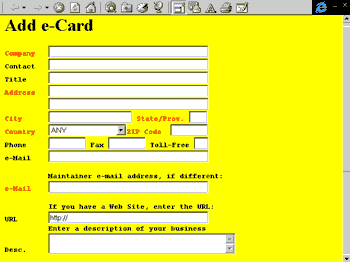

Продвижение Web-узла через регистрацию в поисковых системах Интернета
Михаил Талантов, КомпьютерПресс
Довольно часто приходится слышать, как Интернет сравнивают с
электронной энциклопедией. Аналогия кажется вполне уместной, если на время
забыть о некоторой специфике информационных ресурсов Сети.
Для тех же, кто решился на деловое использование глобального
электронного пространства, на передний план выдвигаются, по меньшей мере, три
фактора. Это беспрецедентный по величине объем доступной информации, высокая
скорость ее обновления и, во многих случаях, отсутствие какого-либо контроля за
компетентностью авторов, ее представляющих. Что же делает Интернет, и, в
частности, Всемирную Паутину WWW динамично развивающимся, связным организмом?
По-видимому, не только и не столько технические решения, которые обеспечивают
легкую навигацию от одного информационного объекта к другому. Важнейшая роль
здесь отводится поисковым сервисам Сети - каталогам ресурсов и поисковым
машинам. Первые представляют собой солидные собрания ссылок, организованных по
тому или иному принципу. Бремя их пополнения лежит на людях, взявших на себя
функции администрирования. Поисковые машины -это полностью автоматизированные
системы, сканирующие Сеть. Два этих типа сервисов и являются сегодня
соответственно "оглавлением" и "индексом" многотомной "электронной энциклопедии"
по имени Интернет. Точнее, это целое семейство оглавлений и индексов, которые
позволяют пользователю получить сведения о более чем 320 миллионах Web-страниц.
В связи с этим становится понятным нарастание интереса
разработчиков Web-узлов к поисковым службам, которые оказываются в состоянии
обеспечить до 40, а в некоторых случаях и до 70 процентов обращений к сайту.
Однако использование поисковых систем для продвижения Web-узла не может
гарантировать успеха, если разработчиком не учтен целый ряд тонкостей этой
процедуры. Так, далеко не всегда очевиден спектр наиболее значимых для трафика
поисковых систем, в которых следует зарегистрировать и сопровождать узел.
Однозначный ответ на этот вопрос может дать только анализ статистики посещений
узла после регистрации. Кроме того, чтобы обеспечить практическую, а не
теоретическую доступность своего сайта из списка отклика по тому или иному
запросу на поисковой машине, приходится учитывать особенности функционирования
отдельных сервисов.
Решение о регистрации
Процедура регистрации узла в поисковых системах Интернета может
быть более или менее трудоемкой, в зависимости от поставленной задачи и
используемых инструментов. Неплохо с самого начала разработки Web-сайта
определиться с двумя важными для его будущего моментами: доменным именем и
структурой.
Смысловая нагрузка на доменное имя сервера, будь то название
компании, продукта или профиля деятельности весьма велика, а его изменение
бывает равносильно смерти узла. Использование одного-двух ключевых терминов,
фигурирующих в доменном имени, для многих пользователей становится самым быстрым
способом локализовать искомый ресурс. Этому также способствует то, что все
большее количество поисковых систем, в том числе и русскоязычных, поддерживают
поиск, если не по имени хоста, то хотя бы по URL.
Как известно, наиболее значительна роль поисковых систем в
продвижении
крупных информационных сайтов с десятками и сотнями документов.
Если вы создаете узел такого типа, то следует заранее убедиться в том, что его
структуру не придется менять по мере дальнейшего наполнения. Изменение картины
навигации на узле, имен файлов и каталогов, их перемещение нередко сводят на нет
все предыдущие усилия по регистрации ресурсов. Если становление узла или его
реконструкция еще не завершены, то стоит не только подождать с его пропиской в
поисковых сервисах, но и предотвратить преждевременную регистрацию, которая
может быть выполнена программой-роботом автоматически. Об этой возможности будет
сказано ниже.
Где регистрировать Web-узел
После того как принято решение о начале регистрации, необходимо
определиться с планом ее проведения. Выбор здесь оказывается достаточно широким.
Прежде всего, сами поисковые службы могут носить различный характер по типу
функционирования, организации и профилю, иметь разный уровень доступности для
ваших потенциальных клиентов и читателей.
Желание зарегистрировать сайт "везде, где можно" пропадает
настолько быстро, насколько удается убедиться в трудоемкости и низкой
эффективности такого подхода. Хотя нельзя отрицать, он дает свои результаты,
особенно, если параллельно идет продвижение узла альтернативными средствами -
банерной рекламой, рассылкой, в прессе и другими. Максимально широкий охват
поисковых систем обычно целесообразен при первоначальной, а также разовой, не
предполагающей дальнейшего сопровождения регистрации.
Проблема выбора, стоящая за вопросом "где регистрировать" в
краткой формулировке выглядит так: на поисковых машинах, т.е. автоматических
индексах или в каталогах, в русских или зарубежных сервисах, в службах общего
назначения или специализированных системах, если не во всех, то в каких.
Определяющим фактором, разумеется, является то, в какой степени
интересующая вас аудитория готова к использованию выбранных вами поисковых служб
как в профессиональном, так и в "географическом" отношении.
Начнем с каталогов, которые традиционно предлагают удобный и
понятный интерфейс для поиска ресурсов. Источником их пополнения могут быть
работа экспертов и самостоятельная регистрация пользователей. Приглашение к
регистрации можно быстро отыскать на домашней странице каталога по заголовку
"Add URL", "Добавить" или аналогичному. В самом простом случае в предлагаемую
форму требуется ввести URL головной страницы вашего узла, в более общем - еще и
дополнительную информацию : ключевые слова, краткую аннотацию и контактную
информацию о лице, сопровождающем ресурс.

Рис.1. Фрагмент
регистрационной формы с бизнес-каталога LinkStar.
В некоторых случаях материалы могут потребоваться на двух
языках, на английском и на национальном языке региона, который имеет отношение к
каталогу.
Поскольку пополнение каталогов часто предполагает "ручную"
работу их сотрудников, число записей в них обычно всегда уступает количеству
ресурсов, заиндексированных поисковыми машинами. Работа поисковых машин, к
которым часто и неверно относят и сами каталоги, напротив, полностью
автоматизирована и происходит по следующей схеме: сканирование ресурсов с
помощью программы-робота, формирование индексной базы данных и, наконец,
обслуживание запросов по ключевым словам.
Несмотря на явный проигрыш в количестве записей поисковым
машинам, каталоги достаточно успешно конкурируют с ними на информационном рынке.
Причина их популярности не только в простоте эксплуатации. Так небезызвестный
каталог Yahoo! побил все рекорды цитируемости в книжной литературе об Интернете.
Одна из причин такого успеха в четкой и достаточно стабильной классификационной
схеме, которая позволяет ссылаться авторам на годами существующие и
непереносимые разделы ("categories") Yahoo! Поэтому, если вы ориентируетесь на
западную аудиторию и зарегистрированы, например, в разделе
http://dir.yahoo.com/Business_and_Economy/Companies/Travel/Airlines
этого узла, то есть надежда, что о вашей причастности к услугам
по авиаперевозкам может узнать несколько поколений пользователей Сети.
Разумеется, регистрация в Yahoo! предполагает длительную
экспертизу со стороны сотрудников каталога, не является гарантированной и уже
обросла легендами, равно как и посредниками, предлагающими содействие в
регистрации за круглые суммы. Создание русского каталога подобного типа можно
было бы считать национальным завоеванием России. Однако на сегодняшний день до
этого далеко. Среди наиболее популярных -рубрикационный сервер "АУ" и каталог
ресурсов на Рамблере. Содержательный обзор и адреса русских каталогов и
поисковых машин можно найти во втором номере журнала КомпьютерПресс за этот год,
с.30.
Пытаясь отыскать свою нишу в информационном пространстве,
многие разработчики делают ставку на профилирование поисковой системы, например,
ориентирование на бизнес. Регистрация в таких каталогах сервера компании бывает
крайне полезной, если речь идет о каких-то более или менее известных сервисах,
таких, например, как LinkStar (www.linkstar.com) или IndustryNET
(www.industry.net). Ниже мы покажем, как можно выяснить популярность каталога с
помощью специальных запросов на поисковых машинах.
При поиске бизнес-контактов у многих возникает желание
зарегистрировать узел в соответствующем региональном каталоге, скажем на деловом
британском сайте (www.ukdirectory.com) или американском узле
(www.all-florida.com/business), штат Флорида. Эксперты этих служб обычно
принимают заявки лишь от тех компаний, которые имеют представительства на данной
территории. Тем не менее в каждом отдельном случае возможны и обходные пути.
На наш взгляд очень неплохие перспективы существуют у
бизнес-ориентированной поисковой системы Open Text Livelink Pinstripe
(http://pinstripe.opentext.com). Этот сервис возник на месте некогда мощной
поисковой машины Open Text Index, прекратившей свое существование. Экспертиза на
включение в каталог Livelink Pinstripe новых ресурсов оказывается более, чем
жесткой. Источником для пополнения его базы данных на текущий момент является
исключительно анализ сотрудниками службы материалов наиболее авторитетных
бизнес-журналов. По мнению экспертов это обеспечивает высокую релевантность. URL
от пользователей Сети в настоящий момент не принимаются, однако в перспективе,
это, видимо, будет возможно.
В глобальном масштабе Сети, тем не менее, любая
специализированная система уступает по популярности поисковым сервисам общего
назначения, таким как автоматические индексы AltaVista, HotBot, каталог Yahoo! и
другие.
Как бы ни были популярны каталоги, должно быть понятно, что
реальную доступность информации в Интернете во всем ее объеме могут обеспечить
только автоматические индексы. Многие из них входят во внушительный перечень
поисковых систем в каталоге Yahoo!, состоящем из более чем полутора сотен
наименований, по адресу http://dir.yahoo.com/Computers_and_Internet/Internet/World_Wide_Web/Searching_the_Web/Search_Engines/
Следует однако помнить о том, что в зарубежной литератере уже
сложилось представление о лидерстве "большой семерки ". Некоторые характеристики
индексов-членов семерки представлены в таблице 1. Если акцентировать внимание на
русскоязычном секторе Паутины, то к семи следует добавить, как минимум, еще три
(см. таблицу 2).
|
Поисковая машина |
AltaVista |
Excite |
HotBot |
InfoSeek |
Lycos |
Northern Light |
Web Crawler |
|
Размер индекса в млн. документов |
150 |
60 |
110 |
45 |
50 |
120 |
2 |
|
Скорость индексирования, документов в день |
10 млн |
3 млн |
до 10 млн |
Нет данных |
от 6 до 10 млн |
более 3 млн |
Нет данных |
|
Время появления страницы в индексе после регистрации |
1-2 дня |
2 недели |
2 недели |
2 дня |
2-3 недели |
2-4 недели |
2 недели |
|
Работа с robots.txt |
Да |
Да |
Да |
Да |
Да |
Да |
Да |
|
Работа с META Robots |
Да |
Да |
Да |
Да |
Да |
Да |
Да |
|
Работа с META-тэгом Keywords |
Да |
Нет |
Да |
Да |
Нет |
Нет |
Нет |
|
Работа с META-тэгом Description |
Да |
Да |
Да |
Да |
Нет |
Нет |
Да |
|
Поддержка кириллицы |
Да |
Нет |
Нет |
Да |
Да |
Да |
Нет |
Таблица 1. Сравнительная характеристика некоторых показателей
"большой семерки" на начало 1999 года.
|
Поисковая машина |
Rambler |
Yandex |
Апорт |
|
Размер индекса в млн. документов |
3,8 |
4,5 |
1,7 |
|
Скорость индексирования, документов в день |
130 тыс |
900 тыс |
Нет данных |
|
Время появления страницы в индексе после регистрации |
Ближайший выходной |
10 мин для доменов "ru" и "su", 7 дней для остальных |
7 дней |
|
Работа с robots.txt |
Да |
Да |
Да |
|
Работа с META Robots |
Да |
Да |
Да |
|
Работа с остальными META-тэгами |
Нет |
Планируется |
Да |
Таблица 2. Сравнительная характеристика некоторых показателей
русских поисковых машин на начало 1999 года. (Использованы материалы сервера Tim
Promotion http://www.promotion.aha.ru)
Роботы поисковых машин сканируют Web-страницы, фиксируя
гипертекстовые связи, ведущие за пределы стартового документа. Ресурсы, на
которые указывают гиперссылки, включаются в план ближайшего ознакомления и
служат источником пополнения индекса. Таким образом, наличия хотя бы одной
ссылки на страницу вашего сайта достаточно для начала его сканирования роботом и
без вашего желания. При этом сроки появления ресурсов узла в индексных базах
данных продолжительны и не определены. Если вы сами оставляете заявку на
индексирование, что делается аналогично регистрации в каталогах и даже проще, то
сроки более фиксированы и существенно сокращаются (см. табл. 1 и 2). После
регистрации Web-узла его страницы начинают появляться в списке отклика поисковой
машины на запрос из ключевых слов, введенных пользователем. Если вы не попадаете
в первые 10-50 пунктов списка, вероятность того, что до ваших ресурсов
доберутся, невелика. Это становится причиной ажиотажа и борьбы Web-сайтов за
"место под солнцем".
Представим себе, что мы ввели в шаблон обобщенной поисковой
машины запрос, состоящий из двух терминов. Алгоритм программы, которая формирует
список отклика, присвоит более высокий ранг одному документу перед остальными,
если тот содержит искомые термины в заголовке Web-страницы или заголовках
различного уровня в документе, содержит термины ближе к началу документа, имеет
более высокую частоту их употребления, большую близость искомых терминов друг к
другу в тексте и, наконец, большую контрастность поисковых терминов в документе.
Картина ранжирования кажется понятной до первой неоднозначности. Какой документ
окажется в списке отклика выше, тот, что содержит ключевое слово, найденное
роботом в заголовке, или тот, в котором оно встречается 50 раз, но в поле
обычного текста? Ответ на этот вопрос может быть принципиальным для числа
обращений на ваш узел через поисковую систему. Если добавить к этому, что
правила игры, по которым работают поисковые машины, также постоянно и без
широкого уведомления пользователей меняются, то становится понятным появление в
Интернете нового круга специалистов и направления бизнеса - Search Engine
Promotion.
Речь идет о поиске и применении специальных методов и средств
воздействия на работу автоматического индекса с целью достижения высокого ранга
в списке отклика по ключевым словам, которые наиболее ярко отражают профиль
узла.
К сожалению, обещания некоторых компаний, предлагающих свои
услуги в этой сфере, нередко носят спекулятивный характер. Наша задача -
показать, какие именно возможности рядовой пользователь может использовать
самостоятельно, и когда, возможно, стоит прибегнуть к платным услугам
специалистов-посредников.
Инструменты, позволяющие управлять индексированием
На сегодняшний день разработчик Web-узла располагает скромным
арсеналом технических средств, которые позволяют управлять роботами поисковых
машин, занятых индексированием. Основных инструментов всего два: размещение
файла со специальным именем robots.txt в корневом каталоге сервера и применение
meta-тэгов в контейнере "HEAD" отдельного документа.
Файл robots.txt содержит набор команд, которые позволяют
закрыть от индексирования отдельные каталоги узла. Обычно закрываются каталоги,
содержащие скрипты, служебную информацию и т.п. Отчасти это повышает
контрастность значимых документов узла в поисковой системе. К тому же поисковые
машины нередко вводят ограничение на число ресурсов, регистрируемых для одного
хоста. Некоторые роботы, как это имело место, например, для робота Lycos'а,
вообще не проводят индексирования, если указанный файл отсутствует.
Итак, если вы поддерживате работу сервера с доменным именем
www.your_name.com , то содержимое файла robots.txt должно быть доступно по URL
http://www.your_name.com/robots.txt.
Подробное описание стандарта исключений и синтаксиса команд
файла robots.txt вместе с другой полезной информацией о роботах, можно найти на
WebCrawler'е по адресу
http://info.webcrawler.com/mak/projects/robots/robots.html
Вместо строго изложения этого материала, приведем пример,
который позволит сделать все необходимое, по крайней мере, для типичных
ситуаций.
Файл robots.txt должен содержать одну или несколько записей,
разделенных пустыми строками:
Пример 1:
# robots.txt for http://www.your_name.com
User-agent: *
Disallow: /cgi-bin/lex/ /tmp/ /css/ /pictures/
User-agent: scooter
Disallow:
Каждая запись должна содержать переменные User-agent и
Disallow. User-agent задает оригинальное имя программы-робота
соответствующей поисковой системы, для которого предназначена информация.
Позже появилась возможность перечислить несколько имен роботов
через пробел. Disallow указывает на перечень закрываемых каталогов. В
примере символ # предваряет строку комментария. Символ * является маской и
означает "для всех роботов". Первая строка Disallow запрещает
индексирование четырех каталогов. Затем роботу Scooter c поисковой системы
AltaVista для доступа открываются все каталоги (поле Disallow пусто).
Напротив, при необходимости закрыть все каталоги следовало бы написать
"Disallow: /"
Файл robots.txt поддерживается практически всеми роботами,
однако корневой каталог сервера может быть вам не доступен. В этом случае для
аналогичных целей, но уже в пределах только одного документа, можно использовать
специальные тэги META. МЕТА-тэги решают не только проблему запрета, но
предоставляют и позитивные возможности для управления индексированием. С их
помощью автор может самостоятельно задать набор ключевых слов и дать краткое
описание своего ресурса.
Для демонстрации этих возможностей прибегнем к комплексному
примеру HTML-кода документа.
Пример 2.
<HEAD>
<META name="robots" content="index,
follow">
<META name="keywords" content="поиск, поисковая машина,
поисковые машины, индексирование, управление индексированием" >
<META
name="description" content="На этой странице Вы узнаете все о том, как управлять
работой поискового робота с помощью МЕТА-тэгов">
<META name="author"
content="M. Talantov">
<TITLE>Применение МЕТА-тэгов для управления
индексированием </TITLE>
</HEAD>
Из примера видно, что все управление из META-тэга сводится к
заданию двух переменных, а именно name и content. При данном
значении name, переменная content может принимать значение из
набора допустимых. Первая МЕТА (name="robots") дает роботам
предписание индексировать и саму страницу (content="index ") , и
документы, на которые она содержит ссылки (content="follow").
Вместо двух этих значений, приведенных через запятую, можно было бы написать
одно content="all" с тем же результатом. Для переменной
content в данной ситуации допустимо также использовать еще три значения:
noindex -не индексировать сам документ, но идти по ссылкам с него,
nofollow - индексировать, но не идти по ссылкам и none -
эквивалентно употреблению двух последних через запятую.
Второй META-тэг (name="keywords") позволяет
автору документа самому задать адекватный содержанию набор ключевых слов и фраз.
Допустимая для восприятия роботом длина перечня варьируется от 874 до 1000
символов. При отсутствии META-тэга робот формирует этот набор автоматически на
основе своего алгоритма. Если индексируется все содержимое документа, то он
будет участвовать в отклике и по тем терминам, которые входят в его содержимое,
но не присутствуют в МЕТА-тэге. Автоматический индекс при создании поискового
образа документа может комбинировать содержимое META-тэгов и текста из тела
документа, должным образом взвешивая термины из разных полей. Далеко не все
системы, которые поддерживают META-тэги, отдают явное предпочтение терминам,
входящим в них, по сравнению с другими полями Web-страницы. Так, например, из
поисковых машин, приведенных в таблице 1, до последнего времени это делали
только HotBot и Infoseek.
Отметим также, что МЕТА-тэг ключевых слов стоит разместить не
как в примере, а в одну линию, поскольку некоторые роботы не умеют переходить к
новой строке.
Следующая META c name="description" позволяет
привести в поле content краткое описание документа. В зависимости от
робота воспринимается длина текста от 150 до 250 символов. После индексирования
описание должно появиться рядом со ссылкой на ваш документ на поисковой машине
при попадании его в список отклика.
Последний МЕТА-тэг в примере 2, позволяющий ввести имя автора,
также может использоваться роботом при сканировании.
Число разработчиков, предлагающих программное обеспечение,
которое автоматически генерирует или проверяет meta-тэги увеличивается.
Существует даже онлайновая служба Meta Medic
(http://www.northernwebs.com/set/setsimjr.html), позволяющая бесплатно проверить
Web-страницу на предмет корректности META-тэгов.
Комментарии Meta Medic указывают на возможные проблемы, а также
дают советы по их преодолению.
Представители большинства поисковых систем уже склонились к
тому, что применение META-тэгов способствует повышению релевантности отклика при
обработке запросов. Тем не менее есть и прямо противоположное мнение,
высказываемое, например, экспертами русской поисковой машины Рамблер (см. табл.
2).
Способы повышения видимости узла из поисковых систем
Если имя вашей компании широко известно и однозначно связано с
уникальными наименованиями продукции или услуг, то проблем с локализацией ваших
узлов в Сети у пользователя, скорее всего , не возникнет.
Другое дело, если вы пытаетесь предоставить клиентам или
читателям сервис или материал, не отличающийся оригинальностью, например,
связанный с разработкой Web-страниц. В этом случае попасть даже в первую сотню
ссылок из списка отклика в глобальной поисковой системе, может быть не просто.
Способов повышения видимости узла из поисковых машин как оправданных с точки
зрения этики, так и сомнительных - немало. Важно помнить о том, что
универсальных средств решения этой проблемы пока не существует: слишком многое
зависит от текущих особенностей работы отдельного поискового сервиса. Проблема в
том, что существует фактически две правды. Одна звучит в рекомендациях по
приготовлению документов со стороны экспертов самой поисковой системы, другая
связана с реальным успехом в достижении высокого рейтинга.
По-видимому, самый убедительный совет, который можно дать
разработчику документов, пытающемуся решить вопрос взаимодействия с поисковыми
машинами самостоятельно, следующий: анализируйте HTML-код тех документов,
которые добились в интересующих вас сфере деятельности и поисковой системе
наивысших рейтинговых результатов. Это относится и к META-тэгам, и к остальному
содержимому страниц. Естественно, такой анализ является специфичным и
трудоемким, и может служить поводом для обращения к профессионалу.
Оптимальный результат обеспечила бы компания-посредник, которая
состоит в прямом контакте с разработчиками поисковых систем. Если такие связи и
существуют, они, по понятным причинам, вряд ли когда-либо будут оглашены. Но
есть и косвенные, хотя и медленные, приемы анализа работы поисковых систем,
доступные каждому, а именно -тестирование. Автору известно о создании целых
тестовых Web-узлов, единственной задачей которых является выяснение
чувствительности работы алгоритма отдельной поисковой машины к картине
размещения информации на Web-страницах. Широкое распространение в Сети получила
разработка так называемых страниц-мостиков (bridge-pages), которые оптимально
ориентированы на конкретную поисковую систему. Добраться с них до основной
страницы узла читателю позволяют гиперссылки.
В целом, когда ситуация требует приготовления материала для
наилучшего восприятия программой-роботом, а не конечным пользователем, не может
не вызывать опасений.
Так, например, известно, что AltaVista, особенно высоко
оценивает содержимое заголовка страницы, помещаемое в контейнер TITLE. В
результате вверху списка отклика этого индекса появляются сотни документов, где
вместо связного заголовка фигурирует набор ключевых слов и фраз. Именно этот
набор и станет по умолчанию именем закладки на документ при работе с
большинством браузеров.
Однако даже столь прецизионная настройка на систему не дает
долговременных гарантий: недавно в телеконференциях появилось несколько
сообщений об изменении AltaVista характера ранжирования документов в начале
марта 1999 года. Его результатом стал откат многих фаворитов рейтинга далеко за
пределы реальной видимости.
Подбор ключевых слов для META-тэга документа также носит тонкий
характер. Многие алгоритмы придают больший вес тому термину или фразе, которые
расположены ближе к началу перечня. Число повторений ключевых слов не должно
превышать определенного количества раз, в большинстве случаев двух-трех, чтобы
система не применила санкций против спама.
Неплохую помощь для их выбора могут подсказать системы, которые
отслеживают запросы, поступающие от пользователей на поисковые машины.
Важным оказывается найти не просто адекватные содержанию
ключевые слова и фразы, а именно те, что часто применяются пользователями на
практике.
Одной из таких служб, содержащей в своей базе данных около
полумиллиона запросов, является MetaSearch Keyword Database
(http://www.nfldproducts.com/search/index.html ) С ее помощью можно не только
решить проблему ключевых слов, но и отследить характерную психологию решения
отдельных поисковых задач. Автору удалось, например, выяснить, что при поиске
какой-либо услуги через Сеть, пользователь, как правило, ищет ее с помощью
прямого запроса и не прибегает к посредничеству бизнес-каталогов.
Контроль попадания, сопровождение
Заключительной частью собственно регистрации является контроль
попадания ваших документов в базу данных поисковых систем. Если для этой цели не
предусмотрено специального сервиса, то способ проверки зависит от того, как
выглядит в системе запрос, позволяющий выделить ваш ресурс однозначно.
В автоматических индексах, как правило, в соответствующем
формате указывается URL ресурса. Например, в AltaVista, три запроса в виде
host:your_name.com
url:your_name.com/your_site
url:your_name.com/
your_site/ your_page.htm
позволяют проверить регистрацию узла, каталога и отдельного
документа соответственно. В общем случае автор всегда может использовать
поисковый язык системы и по предельно полному набору ключевых слов выяснить факт
появления своего ресурса в индексе.
При серьезной ставке на продвижение Web-узла через поисковые
системы основную часть времени поглощает не собственно его регистрация, а
сопровождение. И речь здесь идет не только о борьбе за высокое положение узла в
списках отклика. К сожалению, широко известен факт банального выпадания ссылок
на ресурсы из баз данных поисковых сервисов без каких-либо видимых причин. Кроме
того ваша активность при обновлении содержимого узла во многих случаях
оказывается единственной возможностью увеличить частоту его посещения роботом.
Файлы статистики посещения сервера, как известно, позволяют
выяснить вклад каждой поисковой системы в трафик и сосредоточиться на
доминирующих сервисах. Помимо роста числа обращений на узел существует и другой
способ убедиться в успехе компании по его продвижению. Для этого можно выяснить
количество ссылок на ресурсы вашего узла с других страниц. Обычно для этих целей
используют автоматические индексы, роботы которых способны прочесть адрес ссылки
из HTML-кода документа.
Так, в поисковой машине HotBot для этого нужно ввести в шаблон
запроса URL вашего узла, причем обязательно с указанием протокола. Затем сменить
опцию "all of the words" на "links to this URL".
Сходными возможностями обладают Excite, Infoseek и WebCrawler
Более гибкий язык AltaVista позволяет даже в шаблоне простого
запроса заранее исключить цитирование "самого себя", т.е. документы, которые
принадлежат самому узлу, рейтинг которого исследуется:
+link:your_name.com -host: your_name.com
Для получения объективной картины следует перебрать несколько
поисковых систем.
Предположим, мы хотим отдать предпочтение при регистрации
одному из каталогов, BizCardz (www.bizcardz.com) или BizWeb (www.bizweb.com).
Выясним количество ссылок на них из других документов с помощью поисковых систем
HotBot и AltaVista указанным выше способом (таблица 3).
|
|
AltaVista |
HotBot |
|
BizCardz |
4158 |
2460 |
|
BizWeb |
78 |
45 |
Таблица 3. Исследование цитируемости каталогов BizCardz и BizWeb
с помощью автоматических индексов.
Однако на сегодня традиционного подхода может быть уже не
достаточно. Распространение получает чисто маркетинговый прием, так называемое
"мертвое цитирование". Суть его в том, что ссылка на сетевой ресурс в документе
оформляется не с помощью якоря, а как обычный текст. По мнению некоторых
маркетологов, это может препятствовать быстрому уходу клиента на другой узел.
Грустно осознавать, что легкость навигации по Паутине начинает кому-то мешать.
Выяснить количество мертвых ссылок на свой сайт можно с помощью штатных средств
практически любой поисковой системы. Следует только напомнить, что
точки-разделители в доменном имени сервера при построении запроса многими
индексами воспринимаются как пробелы. Поэтому запрос, например, на AltaVista
лучше оформить в виде фразы и заключить в кавычки: "www.your_name.com".
Службы автоматического представления
Сегодня сотни компаний в Сети предлагают свои услуги по
представлению и регистрации ресурсов в поисковых системах. Во многих из них сама
процедура полностью автоматизирована. При этом предложения напоминают аукцион,
на котором звучат не денежные суммы, а количество сервисов, в которых может быть
прописан ваш узел: 6,12,80, 600, 1550! Очевидно, что неизбежен проигрыш в
качестве регистрации, что особенно касается каталогов, формы представления для
которых трудно подогнать под один шаблон. Очевидно, что не располагая
специальными программными средствами, физически нельзя сопровождать свои ресурсы
в огромном количестве поисковых систем. Однако также очевидно, что только
прибегнув к услугам службы подобного типа, можно добиться такой масштабности.
Если говорить о стратегически важных для трафика на узел поисковых системах, то
регистрацию все-таки лучше выполнить вручную. Тем не менее вполне уместно
комбинированное использование служб представления и "ручной" работы. Довольно
популярны бесплатные или частично бесплатные, системы, такие как Submit It!
(http://free.submit-it.com), Add Me! (http://www.addme.com) Cyber Promotion
(http://www.cyberpromotion.com). Солидный перечень подобных сервисов можно найти
на Yahoo! В русском Web'е известны система TAU
(http://www.design.ru/free/addurl) и автоматический регистратор студии JS Дизайн
(http://www.js.ru/poisk/submit.htm)
Заключение
В заключение хотелось бы отметить, изменение статуса вопроса о
регистрации ресурсов в поисковых системах Интернета. Его значение для наведения
порядка в Сети заметно возрастает. Даже безотносительно к коммерческой стороне
дела каждый из нас, кто причастен к размещению информации в Сети, будь то
администратор крупного узла или автор единичного документа, может и должен
задать себе вопрос: к чему приведет взаимодействие поисковой системы с его
ресурсом? Результатом могут стать появление как десятков никому не нужных
мусорных записей в индексе, так и точно позиционируемой ссылки, которая облегчит
жизнь хотя бы нескольким пользователям.
Заключение
Анализируя процесс разработки Web приложений БД на основе
примитивов можно указать ряд очевидных преимуществ:
- на этапе разработки приложений основное внимание уделяется реализации
логики приложения, а не его деталям;
- наличие базовых прототипов упрощает разработку приложений для решения
конкретных задач путем их адаптации;
- подход к построению приложений на основе примитивов упрощает сопровождение
приложений.
Литература и ресурсы
-
Selena Sol. Introduction to Databases for the Web - http://www.stars.com/Authoring/DB/Intro/
-
John Paul Ashenfelter. Getting Started with Web Databases - http://webreview.com/pub/1999/02/26/webdb/index.html
-
Дмитрий Котеров. Apache + Perl + PHP 3.0 для Windows 95/98: руководство по
установке - http://www.webclub.ru/materials/apache_win/index.html
-
Relational Databases - http://www.awtrey.com/support/dbeweb/
-
Stig S. Bakken and all. PHP3 Manual - http://www.devshed.com/Server_Side/PHP/Manual/manfiles/
-
Дик Брэндон. PHP/FI Version 2.0 /Пер. с англ. Юрия Плетнева - http://www.citforum.ru/internet/php/index.shtml
-
Jay Greenspan. Working with Forms - http://www.hotwired.com/webmonkey/99/13/index2a_page4.html